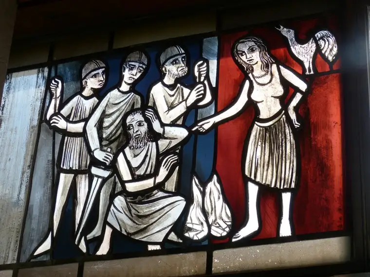

In the years before we started school, when our parents were both teaching, my sister and I spent our days with a sweet babysitter, a widowed mother of four children who made the best mac and cheese and always read stories to us on the couch before naptime.
Mrs. Anderson also played the piano and taught us Bible songs like, “Jesus Loves Me.” And recently, the words from that long-ago song have struck me in the heart, particularly the line: “I am weak but He is strong.”
At my July appointment with my spiritual director, I had to admit how weak I have felt in spirit recently. I was also able to pinpoint several examples. One included an exchange I’d been having on Twitter that was beginning to weigh heavily.
It wasn’t with abortion advocates, or non-believers, though I have stepped into those conversations on occasion. The discussion was happening with non-Catholic fellow believers. What saddened me most was the disunity that was all too apparent. And even while calling others out on this, I became part of it as well by engaging as long as I did.
I believe in having discussions, not just with those who believe as we do, but others, too. It keeps me on my toes, helps me understand different perspectives, and strengthens me in my attempt to create bridges for unity. But sometimes, it just doesn’t work out well. Sometimes it backfires.
Which was the case here. And what made it more troubling was that one of the main two protagonists was someone I care about and know personally — not often the case on worldwide Twitter.
It was years ago, at a community potluck, that he’d first reached out to me, asking about my Catholic faith. He wanted to know more about the Rosary. I shared what I knew. A few years later, we saw him at Mass. I was confused, but surprised and delighted. I reached out afterward and learned he was thinking about entering RCIA. I was thrilled! As a grateful Catholic, why wouldn’t I be? I offered my help and insight, introducing him to Catholic practices like Adoration and having in-depth discussions about the faith. He impressed me with his knowledge, and I could see God working in beautiful ways. I even attended, with a couple other friends praying for him, a Mass at which he advanced in his journey, and when it was time for his Confirmation, I traveled out of town with my youngest two sons and mother to celebrate with him, grateful to be a part of his journey into the faith that has enriched me so.
But in the following year or two, I began to wonder if he’d really grasped Catholicism. There seemed to be large gaps in his understanding and practice which puzzled me. I wondered how firmly the roots had been planted after all. Some of his family had been grieved over his conversion, which I realized could be an obstacle for his remaining in the fold, and I’d read that in the first couple years, young converts can be especially vulnerable if not well-connected. I offered suggestions to help him feel part of Catholic life with his peers. But ultimately, he walked away.
He connected with me after that on Twitter, and I soon realized that beyond just leaving the Church, he was now actively speaking against Her. This hurt. It felt like betrayal. Even though I knew it wasn’t about me and that our Lord could steer it all rightly, in my humanity, I could not see as deeply as Jesus, and was troubled.

The most recent Twitter conversation focused largely on the topic of Reconciliation, and as I tried to explain it from my perspective, my fellow non-Catholic Christians, including my friend, began to build ammunition against my cause. I tried being judicious and kind, but in moments, I allowed my frustration — and hurt — to drive some of my words. As they high-fived each other in Twitter fashion, I felt the bitter sting of temporary defeat.
In the middle of it all, I read a short reflection on the Good Samaritan in my Magnificat that struck me: “Our tendency is to immediately place ourselves in the shoes of the Good Samaritan and derive a moral lesson from the story. However, we are the one lying beaten and half-dead. Only when we have been loved back to life by the One ‘in whom all the fullness was pleased to dwell’ and who ‘makes peace by the blood of his cross’ are we able to ‘go and do likewise.'”
I was definitely feeling “beaten in spirit” and “half-dead.” If fellow Christians could bring me to this, what hope was there?
The next day, I met my spiritual director, and after admitting my weaknesses through tears, Father reminded me that in allowing ourselves to be weak, Jesus can do his best transforming work in our souls. After more discussion, he guided me through how I might be able to politely bow out of the Twitter conversation to restore my peace.
We ended our session with Reconciliation, and at the opening prayer, the irony occurred to me. For it was during a conversation about Confession that some of the most heated parts of our Twitter conversation had happened, and now, I was in the middle of doing the very thing my Twitter friends had spoken firmly against as false, as “unnecessary man-made tradition,” as superfluous and wrong. Not only that, I was about to confess my weakness in those conversations in the very mode they would scorn.
But I felt a lightness at doing so, and as soon as I got home, I ran to my laptop. Though nearly dinner time, I asked my husband if we could delay things just slightly. I had something burning in my soul and needed to take care of it. “It won’t take long,” I promised. I proceeded to not only bow out of the conversation with my non-Catholic friends by unfollowing them, but, before doing so, explaining why. The grace I’d just received from Reconciliation flowed through me, and I was able to be honest and contrite in how I presented my apology and offer sincere prayers. I could part ways from the toxic conversation with a sense of total peace. Unlike previously, I had no desire to take another peek, seek out their responses, nor wonder if they were chatting behind my back — or even if they’d detected my sincerity. It didn’t matter. I’d given it to Jesus, raised it all up to him, and was able to let go. My frustration and feelings of betrayal had disappeared.
I can’t fully explain the new sense of calm I have felt since regarding this situation, but it’s clear I could not have achieved this on my own. It’s been a year or more of feeling unsettled about my friend’s departure from Catholicism, and I wasn’t getting anywhere in feeling hopeful. I needed Jesus. I needed him particularly through the Sacrament of Reconciliation. The grace was so real to me that I knew it was, undeniably, divine, and I am unequivocally grateful.
I have a long way to go in perfecting all this. But Jesus has forgiven me, time and again, for my own betrayals of him. The least I can do is go to him in these hurts that cut to the center of the soul and beg for his healing grace. That we even have this option is a supreme gift.
As I reflect on all of this, I recall the ending words of that song I learned from our babysitter all those years ago: “Yes, Jesus loves me. Yes, Jesus loves me. Yes, Jesus loves me, the Bible tells me so.”
Q4U: What experience of Reconciliation stands out in your mind?